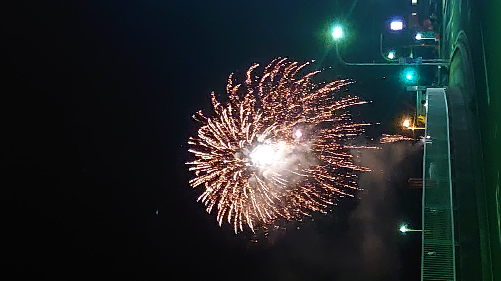
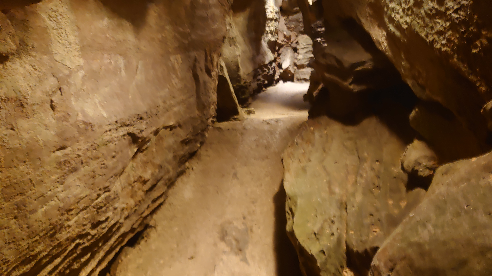
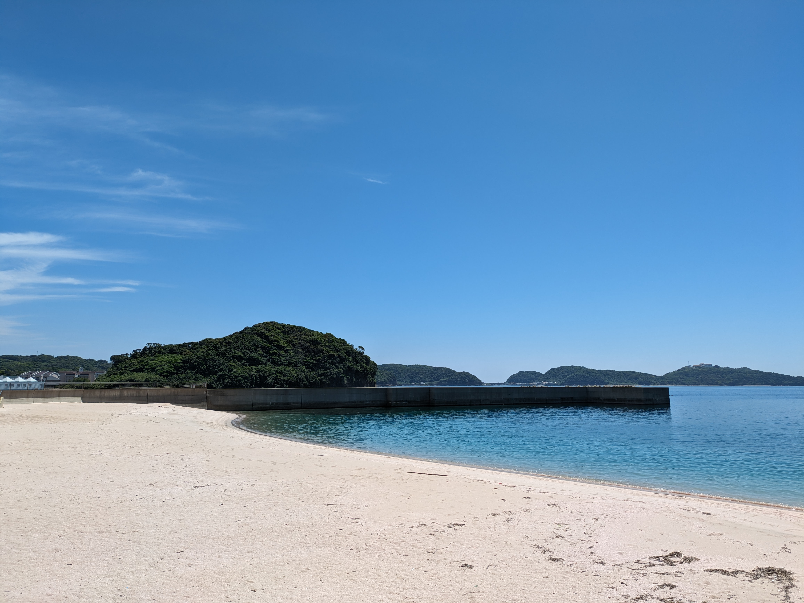

長崎県西海市在住です！
人口減りがちで長崎市や佐世保市より知名度が低いので、西海市に興味を持ってもらえると嬉しいです！ 写真は自身で撮影したものですが、基本的に人がいないので、人がいない風景写真を撮りたい方は是非来てください！ 下記に良いスポットを紹介します！

大瀬戸花火大会
田舎でゆっくり花火を
花火大会なのに人は少ない上に車も混雑しないです！ 人混みなしでゆっくり花火を楽しめるのでオススメです！

ハウステンボス
異国の空気を味わえる場所
おそらく全国で唯一知られている西海市の観光地。オランダ風の建物と、美しい庭で外国気分を味わえてオススメです！

七ツ釜鍾乳洞
夏はすずしく冬はあったか
西海市、鍾乳洞があります！内部気温は1年通して15度前後と丁度よく、内部コースも260mと丁度いい長さでオススメです！

西海橋公園
渦潮と桜
西海橋の下はたくさんの渦潮が見られる場所です。桜の季節は一緒に花見も楽しむことが出来るのでオススメです！

バイオパーク
開放的な動物園
檻が少なく珍しい動物を近くで観察し、触れ合える動物園です。無防備なカピバラも近くで楽しめるのでオススメです！

崎戸海浜公園
透き通った海
6/15に撮影した写真ですが、泳げる気温なのに誰もいなくて驚きました！ 6月は美しい海を独占できるのでオススメです！